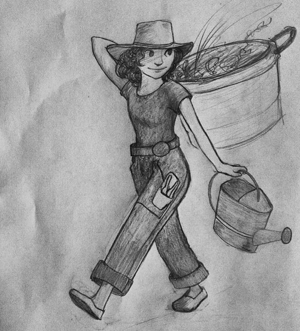
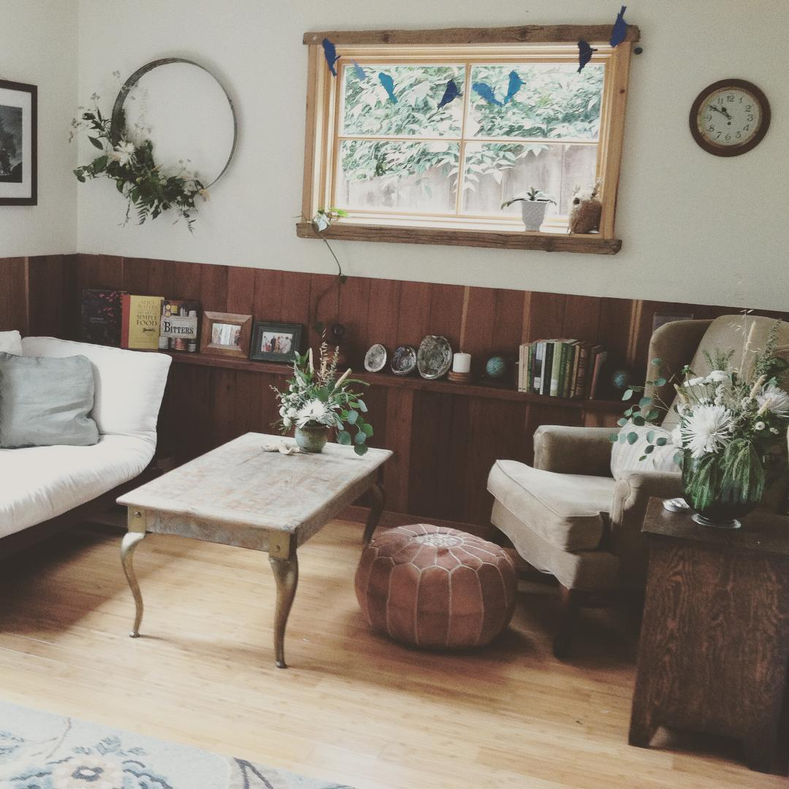
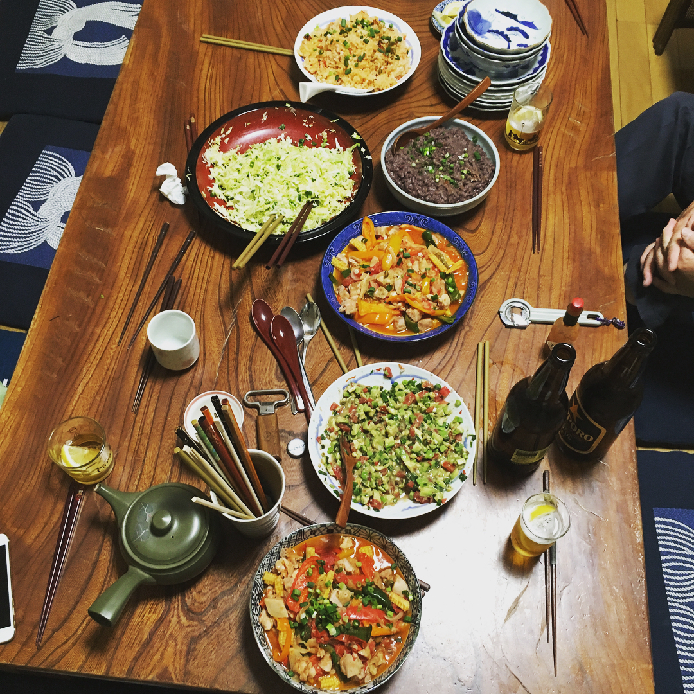

care
I’ve cultivated multiple skillsets for paying attention, avoiding doing harm, and providing what is needed for health.
wilds
I collaboratively founded and led the ephemeral Wildcat Canyon Watershed Community. From 2013 to 2014, this citizens’ alliance removed invasive plant species, harvested fruits and firewood, and reported on wildlife habitat needs in Tilden Park, part of one of the oldest and largest regional parks in the United States. Collaborators included UC Berkeley faculty and students, Tilden Park staff, Treewolf arborists, members of the Diablo Fire Safe Council, and homeowners on the wildland-urban interface (WUI). At a time of immense polarization over fire hazard mitigation strategies, we fostered a culture of participatory care for the landscape. Long term, we succeeded in building a fire-break between eucalyptus and informing municipal agencies of the needs two salamander species (Taricha torosa and granulosa) in the headwaters, and of Dusky-Footed Woodrats (Neotoma fuscipes) in a watershed nearby.
gardens
I know how to tend to hundreds of culinary, ornamental and noxious plants—both California native and introduced. I'm proficient at pruning trees that are less than 15 feet tall, an important stage in tree development. I've made five kinds of compost, including one for processing human droppings. I can rig plumbing and irrigation systems to harvest greywater in compliance with California legal code. I'm trained in posture so that I can move dozens of cubic meters of compost or pull weeds all day and be relatively gentle with my body.
houses

During a seismic retrofit of our house, my former partner and I took the opportunity to build out another flat—and exercise Michael’s degree in sustainable design.
We completed much of the labor ourselves and used recycled materials wherever we could. For instance, we repurposed the house’s rotting deck into the wainscotting in the photo.
It turned out so charming, we moved in to the diminuative studio.
We rented out the rest of the house as something of a haven from the housing crisis in the region, letting the rooms to artists, activists, and BIPOC at below the exorbitant market rates.
This formed a dynamic and caring community.
The largest earthquake in thirty years struck the week after we finished the updates. The whole house was utterly unscathed.
kitchens
Highlights:
- Utilizing my toaster oven, I suceeded in making soufflé with students in a middle school garden that lacked a kitchen.
- A friend whose culinary skills I revere lauds my general ability to enter a kitchen that others deem barren and make something surprising and delicious with the ingredients available.
- A man from southern Italy told me I made great pasta. I grew the tomatoes and basil in my community garden plot.
- I’m really good at convincing children to try new foods.
- Photographed: I made Mexican food for friends in Japan with few of the original ingredients. Adzuki beans are very tasty when refried.